走位、站位和控位的关联性较大，我就放在一起综合说明了。 相对而言最简单的是站位，站位需要保证的第一原则是我方单位不被击落，第二原则是反击输出最大化或者相对而言我方承受伤害最低。当然这是对于一般情况而言的，如果需要完成诸如隐藏、挑战之类，那么就需要根据目标进行合理的站位。
1.走位方式
1.1生存原则：在回合结束后我方弱势单位即将受到来自敌方的攻击并受到致命伤害时，我们需要走位来避免被击坠，走位生存的方式有多种，我们需要根据实际情况去选择使用，其中还涉及到此单位与其他单位之间形成的利弊关系。以下我就以同一情况来说明不同的走位方式以及相应的利弊性。
1.1.1退位生存：跑路即可，一般是最简单的生存方式，即脱离与主战场的联系，生存性较大，但是在下回合无法较好得再次融入战场。
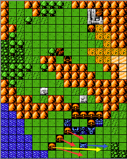
假设爱美神A在初始位置会受到三个扎古而受到致命伤害，我们可以将其移动到蓝色箭头所示位置，此时只会受到黄色箭头末端的扎古的攻击从而避免被击坠。
1.1.2己方单位依靠：对于修理单位而言，这种走位方式一方面可以让自己承受更少的攻击次数，也可以让弱势队友承受更少的攻击次数或者得到修理。对于一般单位而言，就是少了一个为队友修理的作用。
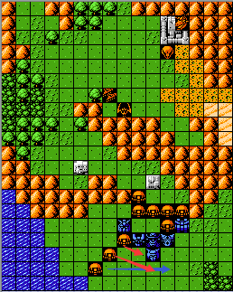
如1.1.1的爱美神A的初始位置所示，爱美神A会受到来自三台扎古的致命攻击，此时我们将其移动到图示位置，此时蓝色箭头所示的扎古无法攻击到爱美神A，爱美神A从而得到生存。
1.1.3地形依靠：依靠地形边界来减少承受的攻击次数，一般而言不多用，在地图边界的情况毕竟只是少数。
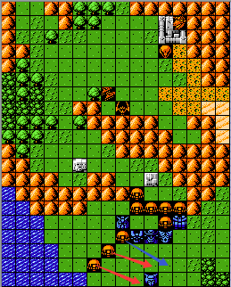
如1.1.1的爱美神A的初始位置所示，爱美神A会受到来自三台扎古的致命攻击，此时我们将其移动到图示位置，此时蓝色箭头所示的扎古无法攻击到爱美神A，爱美神A从而得到生存。
1.1.4母舰搭载：完完全全的避免遭受来自敌方的攻击，但是会将仇恨转移到己方其他单位身上，可能会造成我方其他单位被集火的情况。对于如果进入母舰的是一般机体的情况，在下回合是无法进行远程输出或者使用精神的，这个是致命缺陷，如果是修理单位，这个在大多数时候可以忽略。
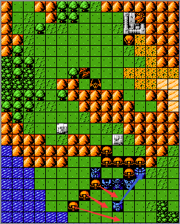
爱美神A位于如图初始位置，将受到三台扎古的攻击而坠落，我们可以将其移动至母舰，避免受到来自扎古的攻击而坠落。
1.1.5精神使用：通过精神使用来达到远离主战场的目的，与1.1.1所述相同，但是还消耗了精神，这是出于下策才不得不使用的生存走位方式。
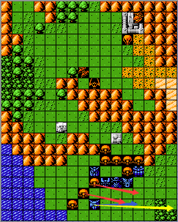
如图所示的情况，如果爱美神A的机动力过低，只能移动到蓝色箭头所示位置，也会遭受相对较多的攻击，此时我们可以选择加速或者疾风，移动到黄色箭头所示位置从而避免被攻击。
1.2输出原则
1.3反击原则
2.站位方式
2.1利用射程差无伤输出
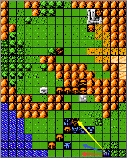
假设黄色箭头所示的敌方单位射程为4，母舰射程为5，那么我们将移动到蓝色箭头所示位置去攻击可能会遭受一定损伤，此时我们可以选择红色箭头所示位置进行攻击，利用射程差进行无伤输出。这是对于对远程单位的处理，对于近战单位我们只要保证不贴身就能无伤输出了。
2.2单位阻挡运用：利用AI智商的判定原则和相应单位的机动力对其阻挡，保护我方单位，如下图所示
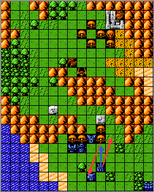
高达在本次行动中预攻击蓝色箭头所指扎古，如果选择红色箭头所示位置，扎古会在行动的时候（移动优先的智商）攻击爱美神A，威胁爱美神A的生存，此时我们可以选择将高达移动至蓝色箭头所示位置，对其进行阻挡，从而起到保护爱美神A的作用。
2.3反击控制：通过合理的站位在保证生存的前提下尽可能的反击输出
3.控位方式：控位是我方通过一系列的操作使得敌方走位之后停留在我们预期想要的位置，将敌方走位结果转变为有利我方的形势。
3.1利用敌方攻击位置的选择顺序进行控位：依据敌方单位在移动之后用近战武器攻击我方单位时的攻击位置选择的原则对其进行控制。这个原则就是按照上下左右的顺序贴身于我方单位进行攻击，如下图所示：
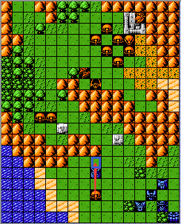
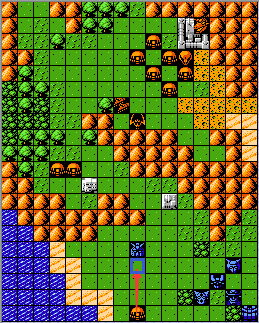
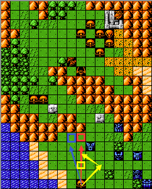
如图一所示，扎古的移动力为5，按照以上所述的攻击位置顺序选择原则，扎古会移动到高达的“上”位攻击高达，对于图二而言，由于扎古的移动力不足以让其移动到高达的“上”位，所以会选择“下”位进行攻击，“左”位和“右”位同理。知道了这个原则之后我们就可以对其进行控位处理，如图三所示：我们可以将高达移动到方框所示的位置，相应的箭头指向的位置就是扎古即将移动到的位置。在实际游戏过程中，我们可以借助地形、敌我方单位更容易的对敌方单位进行此方式的控位处理。
3.2利用地形命中、防御补正进行控位：根据AI智商中的基础判定方式中的第二优先级判定中的对于相关参数或者结果进行操纵从而达到控位的目的。如下图所示：
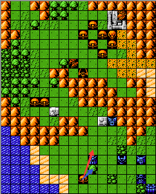
按照3.1所述的对于攻击位置顺序的选择原则，扎古会选择高达的“上”位进行攻击，考虑到地形命中、防御补正的影响，扎古移动到蓝色箭头所示的位置会享受到地形命中、防御补正的效果，因此会选择高达的“下”位进行攻击。依据此原则，我们可以使用地形的影响对敌方单位进行控位处理。
3.3利用敌方单位的移动原则进行控位：敌方在移动、攻击范围内无可攻击的敌对单位时，会朝距离我方最近的单位移动（考虑地形机动补正的影响，也就是绝对意义上的最短路径，非位置关系上的最短路径），据此我们可以通过调整我方单位与敌方单位之间的距离对其进行控位。如下图所示：
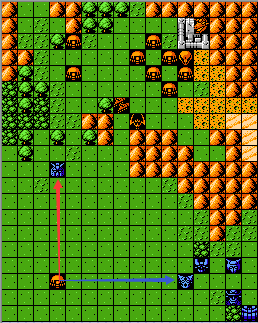
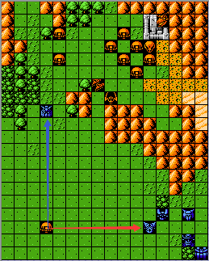
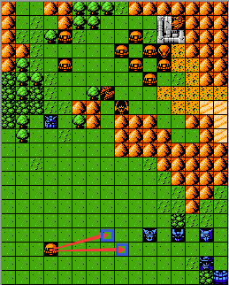
对于图一而言，按照上述原则扎古会朝高达移动，我们对高达进行移动到达如图二所示位置，此时扎古会朝盖塔1移动，此时我们达到了“控位“的目的；对于图三而言，由于扎古在朝盖塔2移动时存在两条最短路径，就会出现随机移动的情况，理论上来说都是1/2，此时我们可以通过SL来使得扎古移动到两个蓝色方框的任意一个位置，从而达到“控位”的目的。
3.4利用武器适应性进行控位：由于海、陆型机体在相应的地形上所受到的伤害是根据攻击方的武器的相适应地形的火力决定的，依次我们可以改变机体所处的地形对敌方单位进行“控位”。如下图所示：
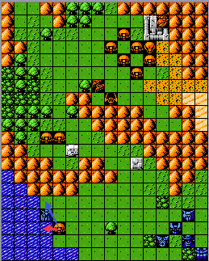
按照一般的攻击位置顺序选择原则，扎古会选择蓝色箭头所示的高达“上”位进行攻击，但是由于高达武器的地形适应性的影响，光束枪无法适应海，所以会选择光剑反击，此时输出伤害就会降低，因此扎古会选择高达的“下”位进行攻击。
3.5利用单位阻挡进行控位：依靠我方单位的阻挡对敌方单位的行动进行限制，实际上也是依据敌方攻击位置顺序选择的原则对其进行控制，如下图所示。
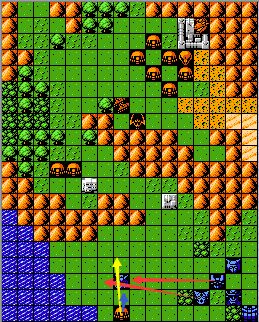
在无我方单位阻挡的时候，扎古会选择高达的“上”位进行攻击，现在我们将盖塔1、魔神Z移动到红色箭头所示位置，由于机动的影响扎古无法移动到高达的“上”位，进而会选择“下”位进行攻击（蓝色箭头所示位置）。
3.6利用地形机动补正进行控位：利用地形机动补正限制敌方单位的某个位置的停留，从而达到控位的目的，如下图所示：
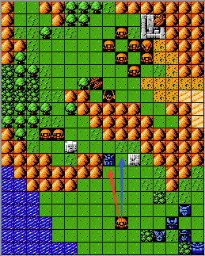
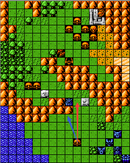
对于无地形影响的情况，扎古会按照攻击位置顺序的原则选择红色箭头所示的“下”位进行攻击，如图一所示；对于图二而言，由于存在地形机动补正的影响，扎古无法移动高达的“下”位进行攻击，只能移动到蓝色箭头所示位置，所以会选择红色箭头所示的“右”位进行攻击。